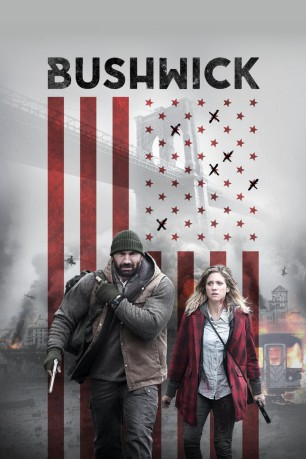
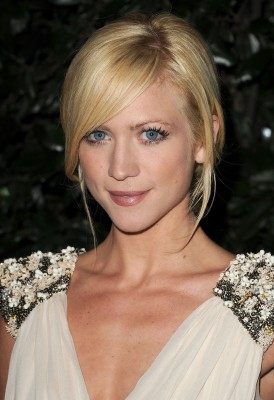
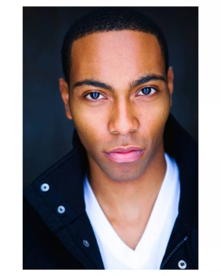
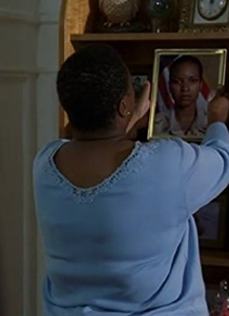
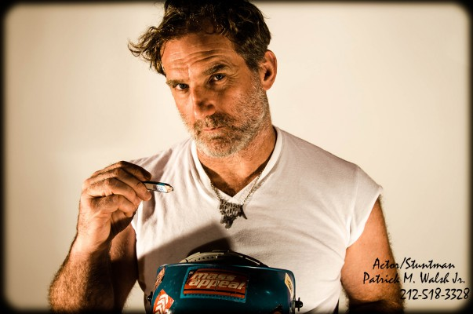

#8638 Bushwick
 
 IMDB-Wertung: 5.2 / 10
IMDB-Wertung: 5.2 / 10  Tomatometer: 46
Tomatometer: 46  Metascore: 44
Metascore: 44 
Der Ausnahmezustand wird in New York ausgerufen, denn der US-Bundesstaat Texas möchte sich vom Rest des Landes abspalten und greift deshalb die Metropole an der Ostküste an. Die 20-jährige Lucy (Brittany Snow) ist gerade unterwegs, als der Angriff der Texaner voll einschlägt und vermummte Soldaten in den Straßen für ein heilloses Chaos sorgen. In dem Durcheinander trifft sie auf den Kriegsveteranen Stupe (Dave Bautista), der ihr beim Überlebenskampf zur Seite steht. Gemeinsam wollen sie zu Lucys Großmutter durchdringen – aber zwischen ihnen liegen fünf Häuserblocks voller schwer bewaffneter Milizen, Eindringlingen und Plünderern, die den Weg zu einer wahren Zerreißprobe werden lassen. Und einen anderen Weg gibt es nicht. Lucy und Stupe bleibt nichts anderes übrig, als die Waffen zu zücken und zu hoffen, dass sie da heil wieder rauskommen…
Jahr: 2017
Dauer: 94 Minuten
FSK:
Land: USA Studio: RLJ EntertainmentTonspuren:
Untertitel:
Auflösung: 1080p (1912x800) Größe: 6072 MB
Genre: Action, Abenteuer
Regisseur: Cary Murnion, Jonathan Milott
Drehbuch: Nick Damici
Soundtrack: Aesop Rock
Darsteller:
 Dave Bautista als Stupe
Dave Bautista als Stupe-  Brittany Snow als Lucy
- Angelic Zambrana als Belinda
-  Jeremie Harris als JP
-  Myra Lucretia Taylor als Ma
- Alex Breaux als Lt. Brewer
- Arturo Castro als Jose
- Quincy Chad als Heathcliff
- Christian Navarro als Eduardo
- Manny Alfaro als Mr. Argo
- Todd Ryan Jones als Lt. Quaid
- Pedro Hollywood als Bushwick Rebel
- Barthelemy Atsin als Joe
 José Báez als Resistance fighter
José Báez als Resistance fighter- John Cashin als Resistance Fighter
- Ludovic Coutaud als Resistance in the Church
- Daniel Garcia als Coalition Fighter
 Jay Hieron als Resistance fighter
Jay Hieron als Resistance fighter- Jeff Lima als Gregory
- Paco Lozano als Priest
- Adrian Matilla als Driver
- Wayne J. Miller als Bushwick Resident
- Leo Minaya als Hector
- Matt Murray als Brooklyn Resistance
- James Padric als White Guy
- Guy Sparks als Bushwick Local
- Agneeta Thacker als Gabriela
-  Patrick M. Walsh als Bearded Man
- Justin L. Wilson als Hasidic Soldier
- Frankie Zing als Resistance Fighter
- Bill Blechingberg als Father John
- Muhammad Cunningham als Benny
- Dee Morris als Rebel Fighter #2
- Wesley Volcy als Chris
- Devin Zamir Coleman als Child (uncredited)
- Christopher Shepard als Coalition Fighter (uncredited)
Datei: X:\2017(A-F)\Bushwick (2017, FSK, 1912x800).mkv seit 11.04.2018
Festplatte: HD 2017(A-Z)-2018(A-F)
 Es gibt insgesamt 152 Filme in der Gruppe '2017(A-F)'
Es gibt insgesamt 152 Filme in der Gruppe '2017(A-F)'